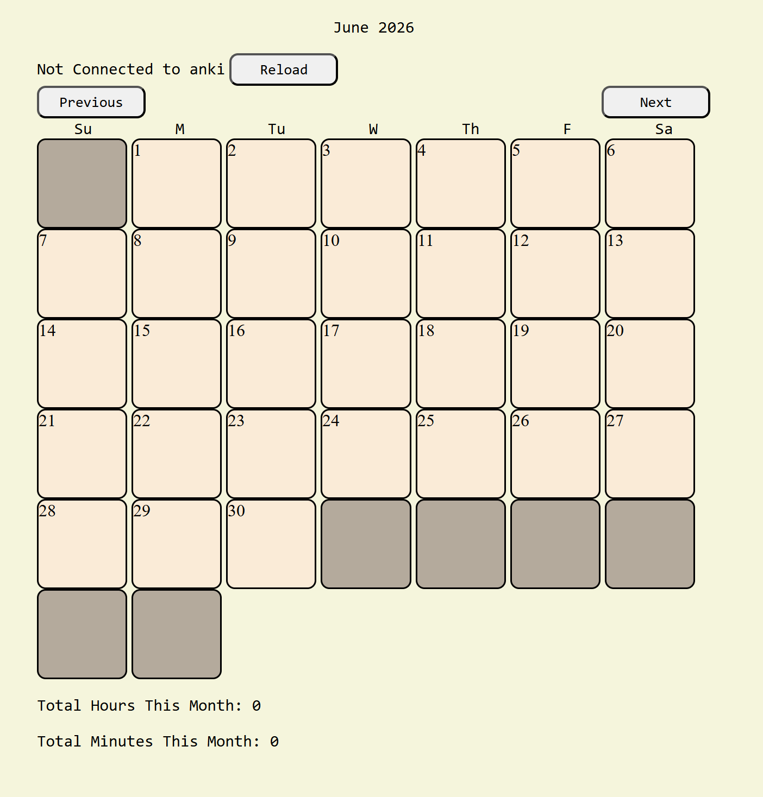
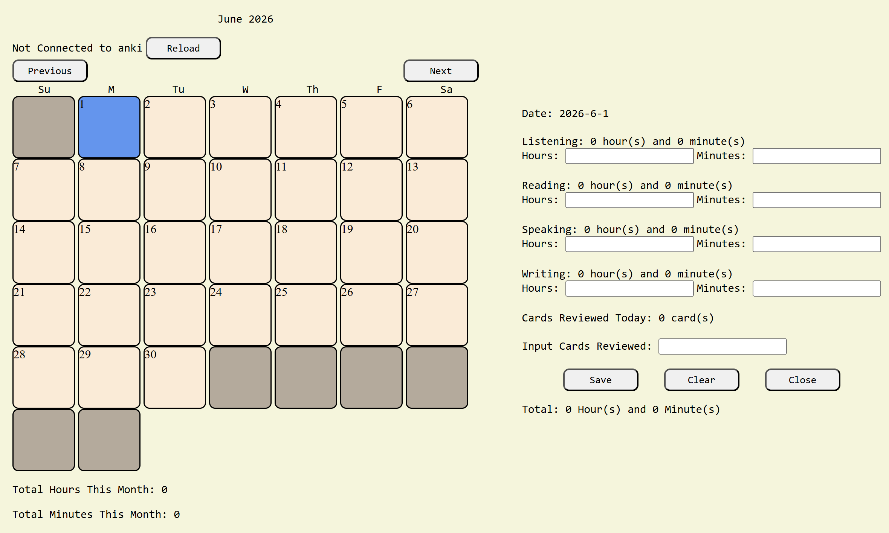
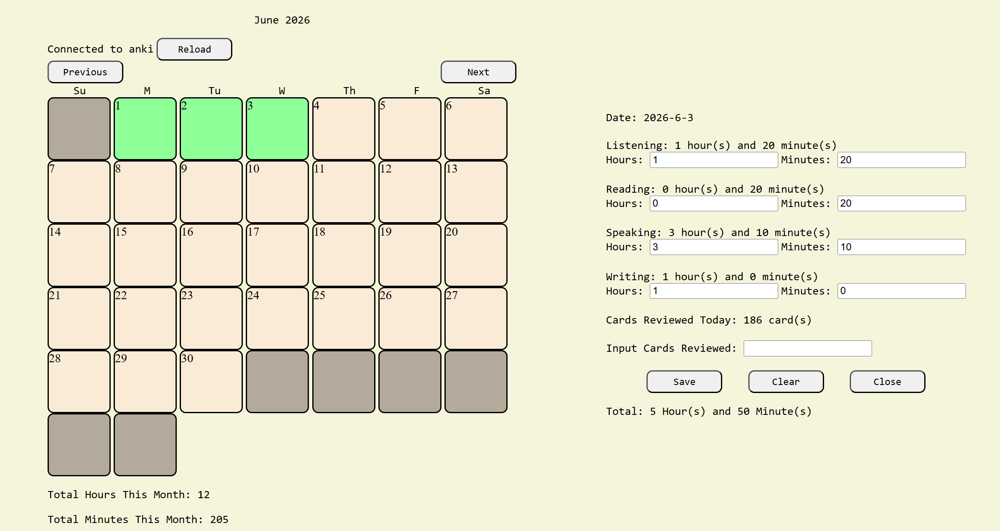

Keep track of the amount of time you spend learning a language each day.

This web application lets the user keep track of the amount of time they spend learning a language each day. It displays the hours and minutes for each month at the bottom. The user also has the option to connect to anki if they use that application. This will help the application know how many flashcards they reviewed per day.

The day the user selects becomes blue and they are able to input the amount of time they spent for each category to the right. The total hours and minutes updates when the user presses the save button. This data is saved to local storage so the next time they open the application the data will still be there. There is also the option to manually put in the amount of flashcards reviewed if the user can’t get anki to connect. Otherwise it will update automatically when the save button is pressed.

The date selected by the user will turn green after data is saved. The month’s total hours and minutes will be updated. The correct amount of time will be displayed for each day when clicked on.